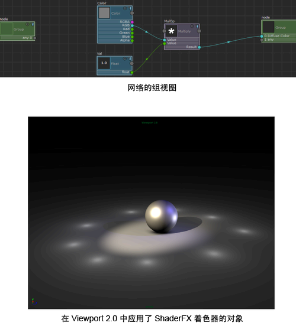

创建节点并将其另存为组
- 选择“硬件着色器节点 > 数学 > 相乘”(Hw Shader Nodes > Math > Multiply)、“硬件着色器节点 > 值 > 颜色”(Hw Shader Nodes > Values > Color)和“硬件着色器节点 > 值 > 浮点”(Hw Shader Nodes > Values > Float)，以分别创建“相乘”(Multiply)、“颜色”(Color)和“浮点”(Float)节点。
- 连接节点，如下所示：
- 将“颜色”(Color)的“RGB”属性连接到“相乘”(Multiply)的“值”(Value)属性。
- 将“浮点”(Float)的“浮点”(float)属性连接到“相乘”(Multiply)的“值”(Value)属性。
- 将“相乘”(Multiply)的“结果”(Result)属性连接到“TraditionalGamesSurfaceShader”的“漫反射颜色”(Diffuse Color)属性。
- 选择三个新创建的节点，然后选择“组 > 创建组”(Group > Create Group)以创建组。
- 单击“组”(Group)
 图标以进入组视图。选择组节点，然后在“属性编辑器”(Attribute Editor)中输入以下信息：
图标以进入组视图。选择组节点，然后在“属性编辑器”(Attribute Editor)中输入以下信息： - “类名称”(Class name)：MyColorFunction
- “类别名称”(Category name)：MyNodes
- “子菜单名称”(Sub menu name)：数学
选择“组 > 将组保存到磁盘”(Group > Save Group to Disk)。
现在，您可以选择“MyNodes > 数学 > MyColorFunction”(MyNodes > Math > MyColorFunction)，以创建组节点的新实例。
